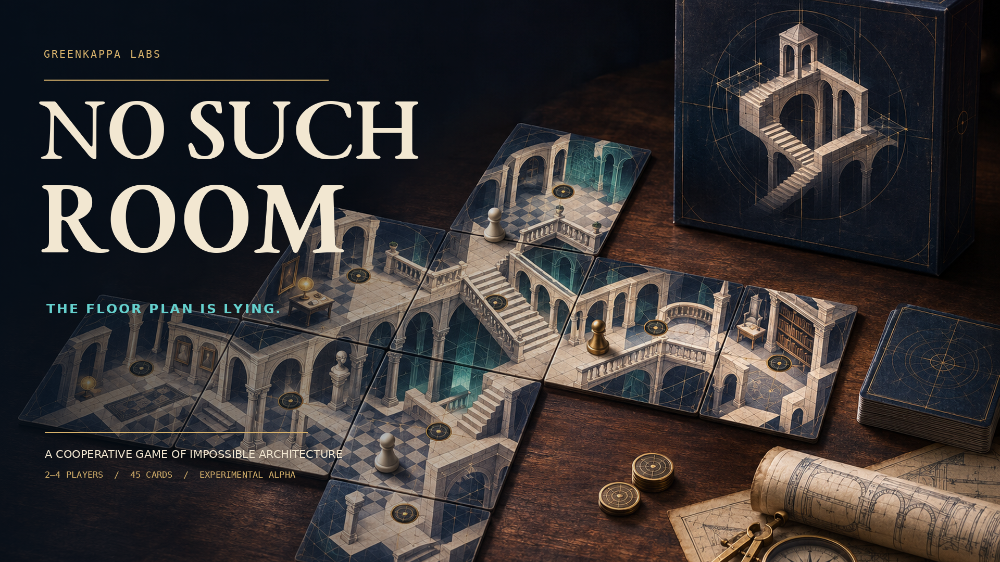
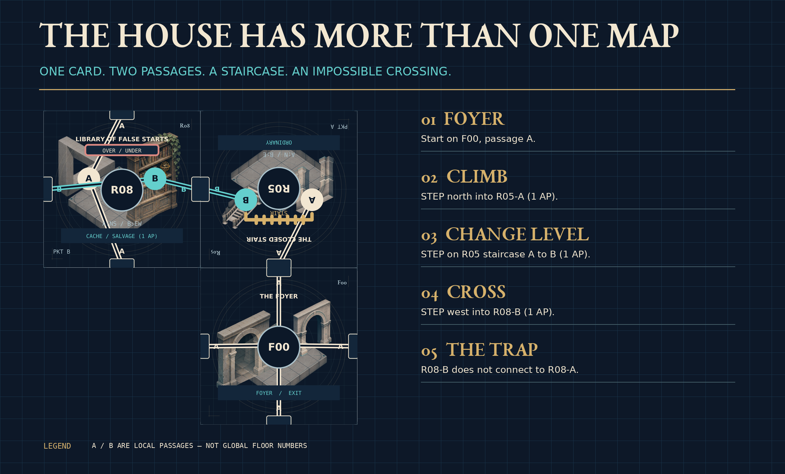
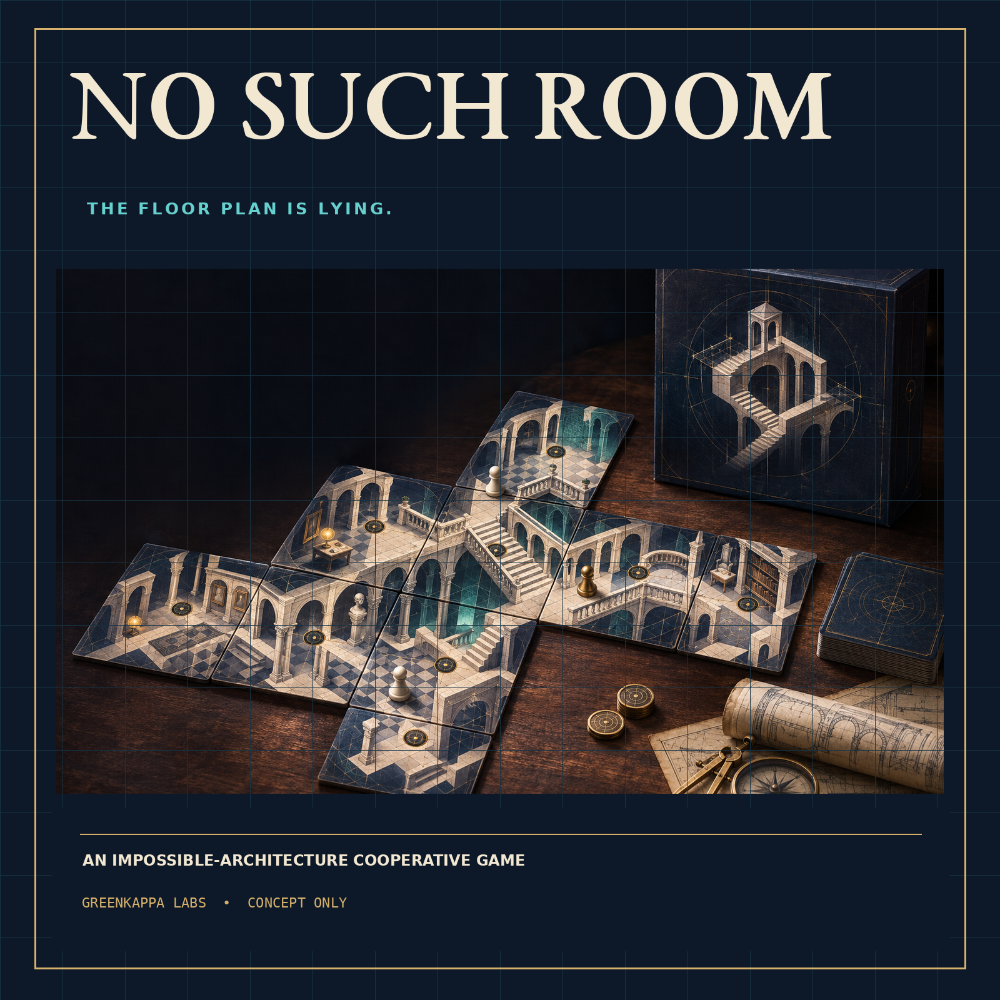

Build the house
Explore through an exposed doorway. Place a square Room and expand the floor plan.
01 / An original tabletop game · In development
The floor plan is lying.
A cooperative board game in which the rooms are the board. Build a house, follow its impossible passages, and escape before the architecture changes beyond recognition.

02 / The central idea
Every new Room is placed beside the rooms already on the table. Its doorways determine which paths exist. Then the house moves.

Explore through an exposed doorway. Place a square Room and expand the floor plan.
Touching tiles aren't automatically connected. Aligned doors, stairs and separate corridors define movement.
Forecasted Shifts rotate, exchange and relocate rooms. Position becomes a resource.
Find three Proofs, bring every pawn back to the Foyer, and EXIT before the twelfth Shift.
03 / The decision space
Two Action Points per turn. The next Shift is revealed ahead of time, giving players information to plan around—not just a random disaster to endure.
Place new rooms, travel through aligned doorways, or spend more to KNOCK through a wall.
ROTATE a room or manipulate Focus. The building's footprint and its walkable paths are different things.
Find Proofs, recover Tools, use distinct Roles and prepare for the forecasted rearrangement.
The passage-level rules are part of an unapproved prototype. They are documented and printable, but full-game balance and human usability are not yet established.
04 / Visual world
Midnight drafting paper. Ivory masonry. Bridges, staircases and rooms that almost make sense. A visual system built for cards that become one impossible structure.



These images establish atmosphere; they are not photographs of physical production cards. The latest individually assembled tile work is archived separately and still under visual review.
05 / The development record
There is a full 45-card print-and-play prototype and an independently assembled visual candidate. Structural checks have verified the passage data and isolated Shift operations. Neither a complete-game win-rate study nor an observed human playtest has established the final difficulty, duration or experience.
Work continues on the hardest art requirement: architecture that reads as a single coherent house when Room tiles are placed side by side and rotated.
Explore the working artifacts
Print-and-play prototypeComplete physical deck, rules and tokens · experimental edition Individual card assemblyv0.6.0-P source package · not final production art Try the browser experimentA separate simplified puzzle—not a digital edition of these rulesElsewhere in the studio